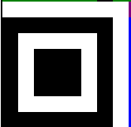
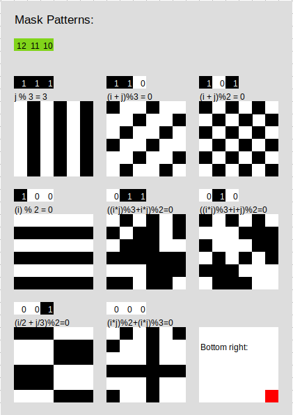

How to decode QR codes by hand
QR codes are everywhere! From ordering food to getting event info I'm contstantly scanning them. I've always thought they were extremely complex and only veteran programers could understand their inner workings.
However, that is not true! They are actaully quite simple and hopefully, after reading this article, you will have a basic understanding of how they work.
What are QR codes?
I'm assuming that you already know so I'm going to skip this section :) [They mostly used just for links. Add rickroll!]
QR code "zones"
Before you can decode QR codes you have to know the different parts of a QR code!
QR codes contain 3 "zones":
- Camera alignment
- Formating data
- Data
The names are mostly self explanatory!
The camera alignment section is for helping cameras align the QR code correctly.
The formating data section contains general formating information for the QR code. This includes the error correction level and mask pattern and "Dark Module"!
The data section contains the actual data (Usually a hyperlink!) and all error correction partity data.
I will go over all these sections in detail.
Camera alignment
The camera alignment zone only has two parts:
- Position squares
- Timing belts
Both of these are just so cameras can align the QR code properly so the data can be easily read. The position squares are on 3 corners of the QR code and look like this:
The timing belts connect each position square and always alternate between black and white pixles as seen here:
Formating data
The formating data is stored next to the camera alignment boxes. This data is:
- Error correction format [0-9]
- Mask pattern [10-11]
- Error correction level [13-14]
- The "Dark Module" []
All data is duplicated for redudency. If a square has the same number its an exact copy in both positions!
The math behind the error correction is too complicated and mostly not important (Especially for humans!) so I'm not going to give a detailed explination. Again, about half of the data is used for error correction!
[Should I talk about low medium error correction levels?]
However, the mask pattern is needed to properly deocde the data.
The mask pattern is to make the data less organized and easier to read. For example, can you tell how long this is?
PICTURE OF BLACK DOTS
Its hard! There are no indictators or lines so its difficult ot tell where one square ends and the next begins. Now try this:
PROPERLY FORMATED PICTURE
Much easier! Whenever you create a QR code there is an algorthem that chooses what mask pattern to use so there are as few "organized" sections as possible.
There are 7 total mask patterns that you can apply to a QR code. The three green bits indicate which to use. Once you figure out which mask pattern is being used you just have to overlay the data section with it. Everytime the mask pattern has a black bit you flip whatever bit below is.
MAKE A BETTER VERSON OF THIS.